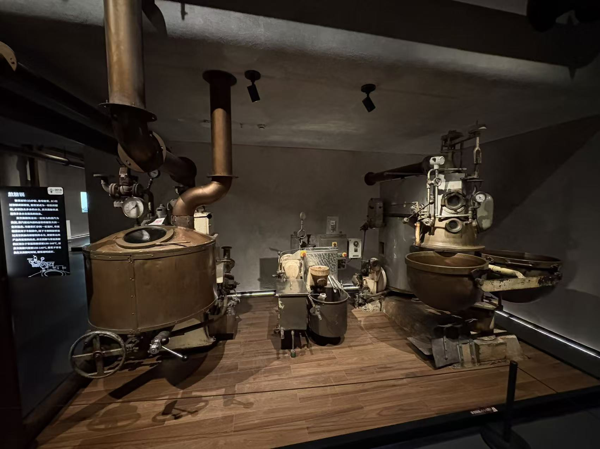

跟着物料走一遍
每一步，发生了什么？
把配方原料变成糖浆
- 进入
- 糖、葡萄糖浆和水等
- 得到
- 待浓缩的糖浆
按产品配方计量并溶解，形成用于熬煮的糖浆。糖与糖浆的比例、配料顺序和辅料选择属于具体配方，不由照片决定。
这里处理的是水和糖的体系，和巧克力基料的脂肪体系不同。
熬煮浓缩，减少多余水分
- 进入
- 已溶解的糖浆
- 得到
- 适合后续调理的浓缩糖料
通过熬煮脱去部分水，使糖浆接近所需的浓缩状态。常压与真空条件会改变过程，不能只看一个温度数字。
展牌记载常压约 150–160℃、真空约 135–145℃，仅作展牌记录；不是可直接投产的通用终点设定。


你的实拍 · 照片 23
加辅料，冷却到可以塑形
- 进入
- 浓缩糖料与适用辅料
- 得到
- 可被整形的糖团
在适合所用风味、酸味等辅料的阶段调配，并把糖料冷却到可以整形、又没有完全硬化的状态。具体加入阶段需按配方确定。
关键是“仍可塑”，而不是先冷到最终食用时的硬度。过早硬化就无法按这条路线正常压模。
把糖团整成尺寸稳定的糖条
- 进入
- 可塑糖团
- 得到
- 截面更一致、可连续送料的糖条
经糖团整形和均条等设备处理，形成与后续成型机匹配的连续糖条。展牌提到前段整形逻辑，但本批照片没有明确识别出相应整套设备。
糖条大小稳定，才有条件让每次分切得到接近目标大小的糖坯。
分切、入模、插棒并压制
- 进入
- 可塑糖条与糖棒
- 得到
- 带棒但仍需继续冷却的糖体
按成型机构的节拍分切糖坯，送入模具，并完成插棒和压制，得到设定形状。各动作可在机器内协调完成，不必想象成多台独立机器。
这台机器是成型段，不是熬糖锅。插棒与模压需要配合糖料当时的可塑状态。
 你的实拍 · 照片 27
你的实拍 · 照片 27

继续冷却到硬，再包装
- 进入
- 刚成型的带棒糖体
- 得到
- 可储运的棒棒糖
脱模后继续冷却，待外形能够稳定保持，再按产品要求检查外观、糖棒位置和包装等项目。包装需要适应硬糖对环境湿度的敏感性。
前面的冷却为了获得可塑窗口，这里的冷却则为了固定最终形状，两次冷却承担不同任务。
多懂一点
容易混淆的地方
模压不等于浇注
模压使用可塑糖条或糖坯；浇注把适合浇注的糖料定量送入模具。两条路线的设备和物料状态不同。
温度数字不能单独用
最终状态还与压力、配方、含水量等有关。展牌两组温度适合帮助理解常压与真空的差异，不构成完整操作程序。
它为什么不去方登机？
典型硬糖不追求方登那样的细小糖晶体糖膏。方登搅打机不能被插入所有硬糖的必经流程。
30 秒自测
为什么要先冷却糖料，却又不能冷成硬块再进模？
想好了吗？展开答案
因为模压需要一个可塑的加工窗口：能保持一定形态，又能在模具作用下变形。完全硬化后的糖块不适合这条成型路线。
有据可查
照片与参考资料
实拍依据来自你拍下的机器与展牌；行业资料用于补齐未拍到的步骤，不代表这些展品曾属于同一条生产线。